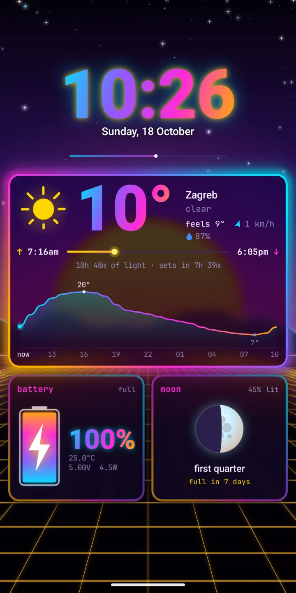
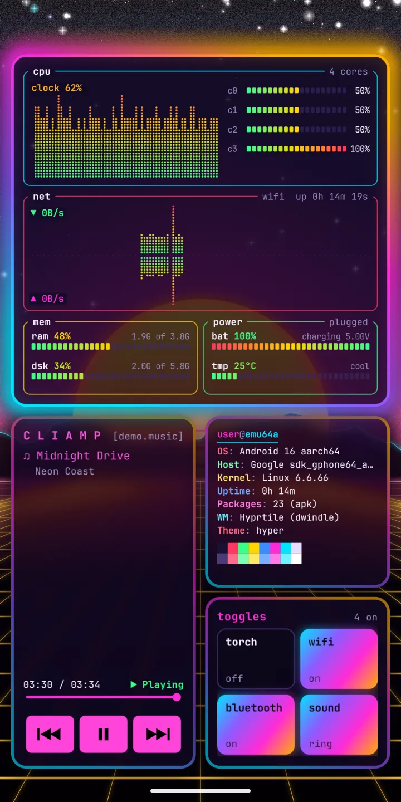
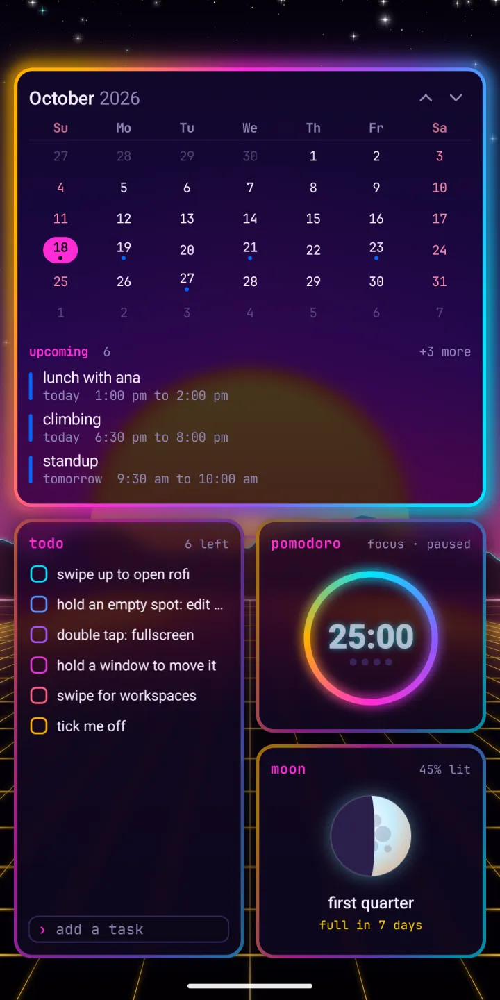
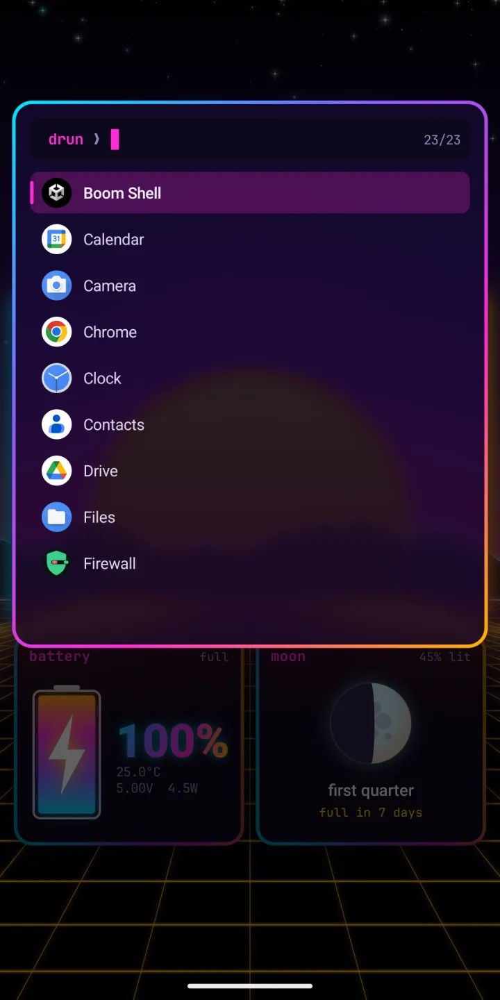
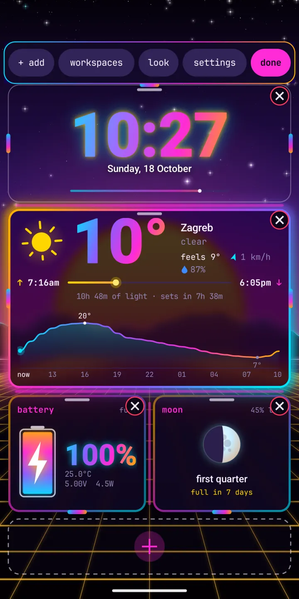
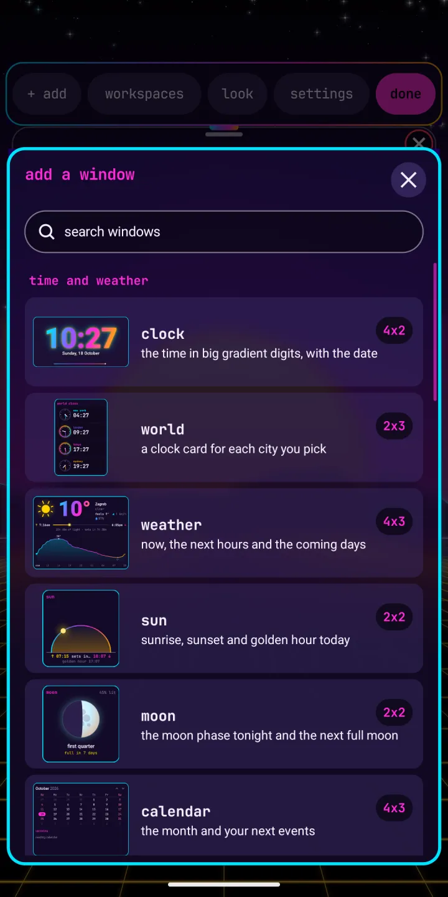
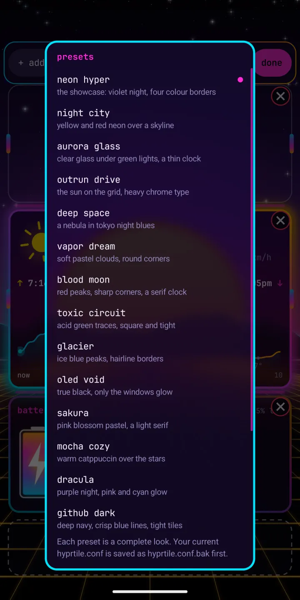
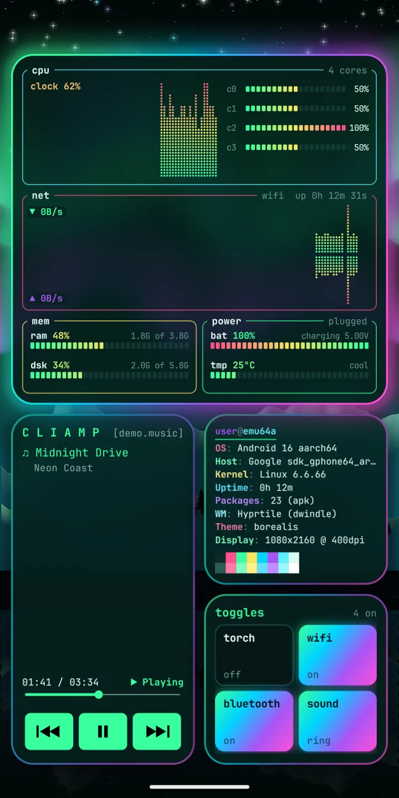

hyprtile
A tiling Linux desktop as your Android home screen. Inspired by Hyprland, Omarchy and kitty. Widgets become windows with gaps and glowing borders, with a terminal, a launcher and 31 themes from the ricing scene.
This is the user guide, and the place to report bugs and ask for features. The app itself is on Google Play.

Tiling home screen
Widgets are windows, tiled with gaps, rounded corners, rotating gradient borders, drop shadows and a frosted blur of the wallpaper behind each one.
Workspaces
Swipe sideways to slide between workspaces. Each one keeps its own windows. Tile them like Hyprland, or place them like Android widgets.
Rice it
18 presets, 31 themes, painted wallpapers that move, five terminal fonts, and hyprtile.conf in Hyprland's own syntax.
25 windows
Terminal, btop, cliamp with radio, cava, weather, calendar, pomodoro, pipes, matrix and more.
Screenshots
From a real phone. Scroll sideways for more.
workspace 1: clock, weather, battery and moon 
workspace 2: btop, cliamp, fetch and toggles 
workspace 3: calendar, todo, pomodoro and moon 
rofi: swipe up and type to find an app 
edit mode: close, resize and add 
add a window: the picker 
presets: a complete look in one tap 
the aurora glass look
Quick start
- Install Hyprtile from Google Play. It runs on Android 7 or newer.
- Open it. The welcome card shows the main gestures. Take the tour: it acts out each gesture on your own windows.
- Tap
set up your phonefor the setup guide: default home, lock screen, notification access and more. - Swipe sideways for workspaces, swipe up for rofi, double tap a window for full screen.
- Hold an empty spot for edit mode. Add windows, open workspaces, look and settings from the strip.
- Pick a preset under
look, and your desktop is riced.
Guide
Setup, gestures, workspaces, edit mode, windows, looks, hyprtile.conf, lock screen, battery and accessibility.
Use cases
A focus phone, a music setup, a work dashboard, a night setup and a full rice.
Cookbook
Short recipes: a music page, a calm page, a night look, border gradients and more.